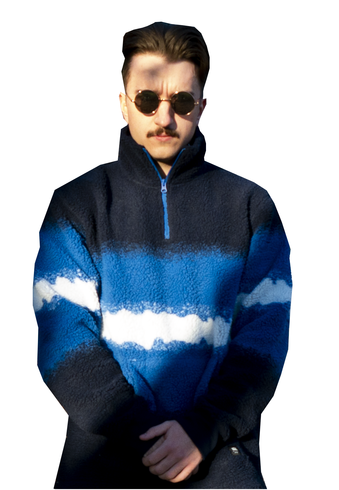

<div class="container-custom seperator">
  <div class="row">
    <div class="col-xl-6 col-md-6 col-sm-12">
      
    </div>
    <div class="col-xl-6 col-md-6 col-sm-12 center-text">
      <div class="about-me-text">
        Nazywam się Bartosz Glanowski. Jestem absolwentem Uniwersytetu Śląskiego w Katowicach.
        Ukończyłem kierunek Informatyka na wydziale Nauk Ścisłych i Technicznych. Swoją przyszłość wiążę z programowaniem, docelowo chciałbym zostać Full Stack
        Web Developerem. Obecnie pewniej czuję się po stronie backendowej, chociaż staram się również rozwijać w kierunku frontendu.

      </div>
    </div>
  </div>
</div>
